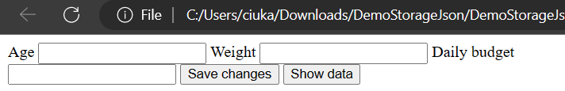
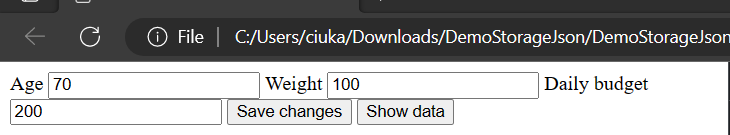

Blijft de data behouden als je de pagina herlaadt?
Neen, de data blijft niet behouden na herladen.
Blijft de data behouden als je het tabblad sluit en de pagina opnieuw opent?
Neen, de data blijft niet behouden na opnieuw openen.
Gebruiken twee tabbladen die dezelfde pagina tonen, dezelfde data?
Twee tabbladen met dezelfde pagina gebruiken verschillende data.
Geef testdata in en druk op “Save changes”.
Open de “Chrome developer tools” en selecteer het tabblad 'Application'. De ingegeven data
werd bewaard in een Json-String.
Refresh pagina of browser afsluiten en pagina opnieuw oproepen.
Druk vervolgens op Show data en de ingegeven data wordt terug opgehaald.
Blijft de data behouden als je de pagina herlaadt?
Ja, de data blijft behouden na herladen van de pagina.
Blijft de data behouden als je het tabblad sluit en de pagina opnieuw opent?
Neen, de data verdwijnt na het sluiten van het tabblad.
Gebruiken twee tabbladen die dezelfde pagina tonen, dezelfde data?
Neen, ze gebruiken andere data.
Denk je dat een andere pagina (andere file of url) aan de data geraakt als je ze in hetzelfde
tabblad opent?
Ik denk van niet, want de data staat niet meer bij "Application" als ik het probeer.
Blijft de data behouden als je de pagina herlaadt?
Ja, de data blijft behouden na herladen van de pagina.
Blijft de data behouden als je het tabblad sluit en de pagina opnieuw opent?
Ja, de data blijft behouden na opnieuw openen.
Blijft de data behouden als je de browser afsluit, opnieuw start en de pagina weer opent?
Ja, de data blijft er nog steeds behouden.
Blijft de data behouden als je de pagina in een andere browser opent?
Neen, in een andere brouwser wordt de data niet meer behouden.
Wordt de data gedeeld door verschillende tabbladen als je de pagina meermaals opent?
Ja, ze gebruiken allemaal dezelfde data.
Denk je dat een andere pagina (andere file of url) aan de data geraakt als je ze in hetzelfde
tabblad opent?
Ja, ik kan de data nog steeds in local storage zien bij andere urls.